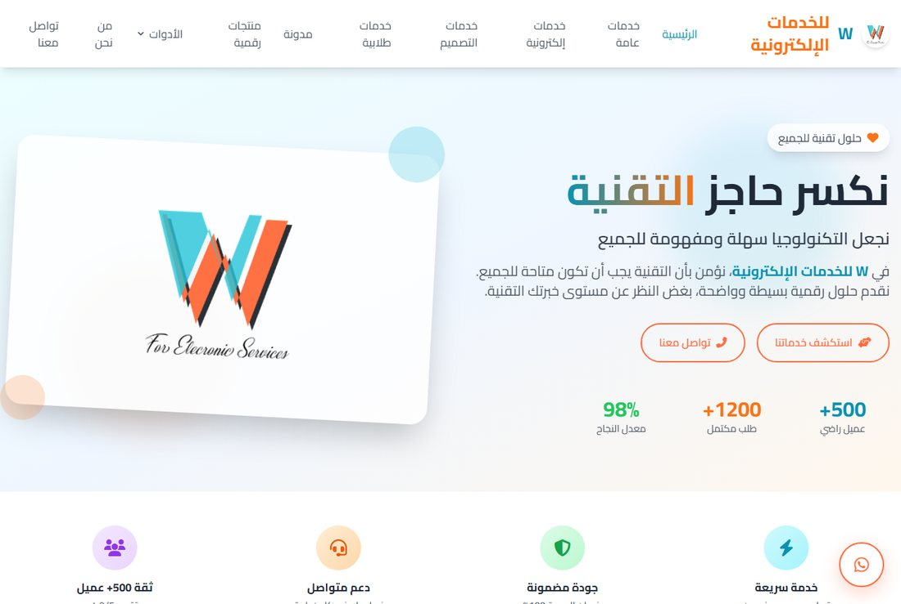

Build record · Ha'il, Saudi Arabia · September 2026
Waleed AlOudah
Arabic-first engineering — AI, payments and production systems, shipped alone.
Business Administration graduate, December 2024 — no computer science background. I design, build, deploy and maintain production software on my own: web, mobile, desktop, payments and AI, with Arabic treated as an engineering problem rather than a translation layer. Every live link here was verified working on 22 September 2026.
Live and operating
Reachable right now by anyone. One of them takes money.
A catering and buffet marketplace for Ha'il. Customers book an event through a six-step wizard; independent catering brands join as partners, and the platform handles the customer, the payment and the schedule, taking commission on each order.
The hard part: three payment providers running live — Moyasar for mada and Apple Pay, Tabby and Tamara for instalments — with a full authorise → capture → settle flow. Saudi regulatory reality is modelled in the database rather than bolted on afterwards: partner commission splits with IBAN settlement, Balady food-licence and civil-defence document gates, and Ministry of Commerce e-commerce intermediary disclosure fields.

A heritage guide for the Ha'il region. Point a phone camera at a petroglyph or a historic building and it identifies the site, narrates its story in any of 29 languages, and builds a weather-aware itinerary.
The hard part: recognition runs entirely inside the visitor's browser — DINOv3 vision embeddings in ONNX, matched by cosine similarity against a reference index built offline. Embedding retrieval was chosen over a classifier on purpose, so adding a new site means adding photographs instead of retraining a model. The acceptance threshold was measured against 198 positive and 53 negative images rather than guessed, and a model-fingerprint check refuses a mismatched index instead of silently returning nonsense. No server, no per-user cost.

An Arabic student and business services platform — graduation projects, presentations and programming work — fronted by around fifteen genuinely free browser tools (OCR, PDF merge and split, QR and barcode generation, background removal) that act as the acquisition channel.
The hard part: sustaining it. Eight months of continuous commits with a real branch-and-pull-request workflow, Arabic RTL and SEO handled properly throughout, and a migration from hand-written static pages toward a typed Next.js and Supabase platform. It also carries a working Supabase-backed café ordering system with separate customer and barista screens.

What I can build
Each of these is backed by something shipped, not by a course certificate. The proof line names where it was actually used.
Web applications
Three live sites, ~86,000 lines. Arabic RTL and SEO throughout.
Backend & data
Serverless APIs in production; 36-model and 8-model schemas designed and migrated.
Payments & Saudi compliance
Live money through three providers, with licensing rules modelled in schema.
AI engineering
Vision models in-browser; OCR-plus-LLM extraction over five years of documents.
Mobile & desktop
Native Android app; nine signed desktop releases with a working auto-updater.
Arabic-first engineering
The specialism. RTL, Arabic OCR, Arabic date and accounting normalisation.
Automation & documents
Five years of scanned contracts turned into one structured dataset.
Quantitative
A trading engine with real statistics behind it — paper stage, no returns claimed.
Professional work — Ldonk International
Hired as an accountant, July–November 2025. Built the following unasked, well outside the job description. Client data is confidential and appears nowhere.
Five years of scanned Arabic contracts turned into one structured, formula-driven dataset. Three stages: Google Cloud Vision OCR over rendered PDF pages, a language model performing structured extraction, then Excel generation with live formulas and RTL formatting.
The insight that makes it work: a contract is not one row. It expands as a cross-product of line items against payment milestones — two products across six payment terms is twelve rows, not one — and every naive extraction gets this wrong, which corrupts every total downstream. The extraction step also corrects Arabic OCR errors, normalises contract-number formats, matches products against a reference taxonomy, and rejects any result whose payment percentages don't sum to one.
A Power Query engine that ingests a folder of Arabic CSV exports and produces aging analysis across client accounts.
Why it isn't wizard output: roughly 54,000 characters of hand-written M. It classifies every row by type, parses Arabic-numeral dates across several inconsistent formats, and solves the genuinely awkward problem of separating document numbers from running balances from actual amounts using transaction-type heuristics, with per-row error capture.
An Electron application that reads Word inventory tables, categorises stock and runs a panel-to-door allocation optimisation with a breakdown view. Packaged and installed as a Windows executable, alongside a companion door calculator.
Built, not deployed
Real systems that run but were never put in front of users — stated plainly, because the engineering in several of them is the strongest work here.
A desktop community app for gamers — servers and voice channels, feeds, streaming, channel points and a marketplace, delivered as a Windows application.
The rare part: nine signed, incrementing installers from v1.0.0 to v1.6.1 with a working auto-update feed. Most projects never produce a second version, because a release pipeline is invisible work nobody applauds. The voice layer is a hand-rolled WebRTC mesh with push-to-talk and spatial positioning, not a hosted SDK. Built in thirteen days.
A Saudi student services platform with an Arabic-first AI tutor and around sixty browser utilities, built twice over — as a Next.js web app and as a native Android app — with a separate Python OCR microservice behind both.
Product thinking, not a wrapper: the tutor's instructions encode Saudi educational context, Modern Standard Arabic with Najdi dialect comprehension, LaTeX maths output, and an explicit refusal to write a student's homework for them.
A Shariah-compliant algorithmic trading engine for Tadawul and US equities, with a FastAPI backend and a React dashboard.
The statistics are real; the track record is not. Hurst exponent, ADF stationarity testing and Ornstein-Uhlenbeck half-life estimation drive the mean-reversion logic, with portfolio Kelly sizing and a genuine halal screening rule engine — debt-to-asset limits, sector exclusion, no swap instruments, minimum holding period. It has never traded live and no backtest results exist, so no performance figures are claimed.
A multi-channel AI customer service backend for Saudi schools and small businesses — web chat and WhatsApp, with a per-organisation knowledge base.
Built against the real API: it talks to Meta's Graph API directly, with dedicated services for WhatsApp's template approval and throughput limits — constraints you only handle if you've actually read the platform rules. Retrieval runs before generation, with a confidence score and automatic provider failover. Never deployed to production.
A bilingual twenty-six-week curriculum application, built from scratch to teach myself the HL7 FHIR healthcare interoperability standard to certification depth.
Stated precisely: evidence of domain study, not of FHIR implementation experience. The finished weeks cover the FHIR metamodel, RESTful principles and medication resource semantics accurately. Later weeks are unwritten.
How I got here
Eighteen months, in order.
Also built
Smaller or earlier, working to varying degrees.